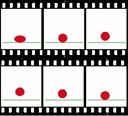

蝴蝶效应与 emacs 动画
Table of Contents
从这个标题你就应该知道了这不是什么正经的技术文章。本文就偶然发现的 emacs butterfly 命令来谈谈 emacs 中如何使用 animate.el 实现简单的动画效果，最后使用经典的 bad apple 来展示一个简单的动画。 bad apple 和 animate.el 的关系可能不是很大了，放在这里仅图一乐。
本文使用的编程环境是 emacs 27.1 on windows
1 emacs 与蝴蝶效应
从 emacs-china 的这个帖子我了解到了 emacs 还提供了 butterfly 这个奇怪又有趣的命令，它是针对下面的 xkcd 漫画1的：
 |
这里对图中的文字做一点简单的翻译：
- 你在用 nano？真正的程序员用的是 emacs
- 嗨， 真正 的程序员用的是 vim
- 切， 真正 的程序员用 ed
- 不对，真正的程序员用 cat
- 真正的程序员用的是一根磁针和稳定的手
- 打扰一下，虽然但是，真正的程序员是用蝴蝶编程的
- 他们张开双手，让蝴蝶的翅膀扑腾一下
- 扰动的涟漪向外扩散，改变了高层大气中漩涡的流动
- 漩涡成为宇宙射线的透镜，将它们聚集以撞击磁盘，并翻转期望的位
- 听上去不错，Emacs 中有一个命令来完成它
- 哦耶，C-x M-c M-butterfly……
- （实际上是 M-x butterfly）
上面的漫画讲了个冷笑话，使用蝴蝶效应影响宇宙射线来进行编程。这听起来比使用只有 0 和 1 两个按键的键盘编程更离谱。至于是先有这个漫画还是先有 butterfly 这个玩具命令，答案是显而易见的，不过这条命令是什么时候被加入到 emacs 中的呢？
这个可以通过查看 misc.el 的 commit 记录来得知（又到了我最喜欢的 emacs 考古时间）。从这个commit来看，butterfly 最早出现在 2008 年 12 月 29 日的一次提交，提交者是 link0ff（Juri Linkov）。最初的版本只是使用 message 显示几条好笑的消息，后续版本在新 buffer 中使用动画效果来绘制文字。查看 emacs 的 commit 历史可以发现 link0ff 是非常活跃的，作为核心成员加一些有趣的代码也许并不是什么奇怪的事情。
下面就是 butterfly 命令的显示效果了：
当然，在闲的蛋疼的时候发现这个命令的人显然不止我一个（更何况我还是在别人的帖子里看到的），Sacha Chua 也是在某次无聊的浏览命令中发现了这个命令，我在她的博客中发现了一个和 emacs 有关的简单动画教程，感兴趣的同学可以去看看：emacs lisp animations
玩的也差不多了，下面我们来看看这个简单的动画效果是如何实现的，以及如何使用它来做一些其他的事情。
2 emacs 的 animate.el
这个库的第一次 commit 时间是 2001 年 1 月 23 日，它的主要功能是动画显示“祝你生日快乐”，也就是在 buffer 中输出一些好玩的诗句。感兴趣的同学可以试试 M-x animate-birthday-present ，然后输入你的名字，它会在 buffer 中输出一些祝福，字符是从四面八方飞过来再摆放好的。
举例来说，当我输入 include-yy 时，得到的就是如下字符串：（我仔细的看了一下，下面的祝福从第一次 commit 以来就没有变过）
Happy Birthday, Include-Yy You are my sunshine, My only sunshine. I'm awful sad that You've moved away. Let's talk together And love more deeply. Please bring back my sunshine to stay!
当然，我们关注的是它的实现方法，也就是它通过什么方法实现了字符的动态摆放。下面我就 animate.el 的代码实现进行一些简单的分析。这个文件只有 200 多行 elisp 代码，除去“祝你生日快乐”的部分，那就只剩下 150 行左右了。
2.1 什么是动画
在正式开始之前，我们不妨来了解一下动画（animation）这个词的含义。
以下部分的内容来自维基百科2：
动画是通过操作图像来展示运动图像的一种方法。在传统动画中，图像是在透明的赛璐珞（Celluloid sheet）上手绘的，以供拍摄或展示在胶片上。今天的大多数动画都使用计算机生成图像（CGI）。计算机动画（Computer animation）可以是非常写实（very detailed）的 3D 动画，而 2D 动画可用于低带宽或更快的实时渲染。
一般来说，动画效果是通过快速的图像序列来实现的，连续的图像彼此的差异非常小。动画比许多人所知的更普遍。除了短片，故事片，电视剧，动画 gif 和其他专门用于显示运动图像的媒体外，动画在视频游戏，动态图形，用户界面和视觉效果中也很普遍。
在维基百科中使用了这样的例子来说明一个弹球动画的产生：
|  |  |
除了动画，有时候我们还会听到“动漫”这个词，它应该是动画和漫画的统称，不过现在大多数人似乎直接将它和日本动画视为同一事物了（包括我）。日本动画也是有它的特指单词的，即 anime3。
我本人并非什么资深动画爱好者或是动画历史学家，关于动画的历史，发展和现状可以参考其他更加细致的文章或书籍。这里简单列出一些我认为值得一读的文章：
下文中出现的动画一词指的就是“看起来很连贯的图像序列”，这个定义算不上严谨，不过对本文来说绝对够用了。
2.2 animation.el 的具体实现
在开始具体的代码分析之前，我们首先要知道这个库到底干了什么。在上面的 butterfly 中我们看到字符从窗口的各个位置“飞”到了它的最终位置，并组成了一句话。其实这也就是这个库的全部功能了：把一个字符串打散到 buffer 各处，然后让它们飞回约定的位置。下面就“打散”和“飞回”两部分来分析代码。
2.2.1 如何打散字符串
animate.el 提供了 animate-initialize 这个函数来打散字符串。它接受一个字符串和两个整数作为参数，并返回包括打散字符信息的表。它的第二参数和第三参数分别是字符串首字符的垂直位置和水平位置。字符串中的首字符的最终位置就是 (VPOS,HPOS)，它后面的字符就是 (VPOS, HPOS + 1)，后面依次水平坐标加一。至于它们的初始位置则由随机函数得到，这个位置与窗口的大小有关。
具体的实现代码如下：
(defun animate-initialize (string vpos hpos) (let ((characters nil)) (dotimes (i (length string)) (setq characters (cons (list (aref string i) ;; Random starting positions. (random (window-height)) (random (1- (window-width))) ;; All the chars should end up ;; on the specified line. vpos ;; The Ith character in the string ;; needs to end up I positions later. (+ hpos i)) characters))) characters))
可以看到，原字符串中的字符对应于返回值表中的一个表元素，表首元素是字符值，随后的四个元素是初始垂直位置，初始水平位置，最后垂直位置，最后水平位置。举例来说的话，我要将 "hello" 放在第 1 行第 2 列，得到的返回值如下：
(reverse (cl-loop for a in (animate-initialize "hello" 1 2) collect (-let (((a0 a1 a2 a3 a4) a)) (format "%c (%s,%s) -> (%s,%s)" a0 a1 a2 a3 a4)))) ("h (10,5) -> (1,2)" "e (11,46) -> (1,3)" "l (7,107) -> (1,4)" "l (16,93) -> (1,5)" "o (4,56) -> (1,6)")
上面的第一个坐标就是随机生成的初始位置，第二个坐标就是最终位置。在返回值中字符顺序与原字符串是相反的。
既然获得了字符的坐标，那么我们就要把它画出来。这个工作可以通过 animate-place-char 来完成，它接受字符、垂直位置和水平位置三个参数，并把字符放到当前 buffer 对应的位置。
2.2.2 如何动态“移动字符”
通过随机函数，我们就得到了各字符的起始坐标和终止坐标，接下来就要将字符从初始位置移动到终止位置。移动的方式是多种多样的，animate.el 选择了最简单的方式，即沿直线从一端到另一端。要体现出移动过程的话，就需要在直线上多次绘制字符，直到到达目的地为止。若有两点 \(x1, y1 \) 和 \(x2, y2 \) ，那么我们可以用中间点到初始点的距离与线段长的比来表示它在线段上的为止。若用 \(\alpha \) 表示比例，则有：
\((x, y) = \alpha(x2 - x1, y2 - y1) + (x1, y1) = ((1 - \alpha)x1 + \alpha x2, (1 - \alpha) y1 + \alpha y2) \)
通过以上公式可以算出中间点的位置。 animate-step 接受一个字符位置序列和一个比值，比值就是中间点的比例值，它为 0 则说明在初始点，为 1 则说明在终点，为 0 到 1 之间的值则在线段中。
(defun animate-step (characters fraction) (let ((remains (- 1 fraction))) (dolist (item characters) (let ((vpos (+ (* remains (nth 1 item)) (* fraction (nth 3 item)))) (hpos (+ (* remains (nth 2 item)) (* fraction (nth 4 item))))) (animate-place-char (car item) vpos hpos)))))
既然动画是图片序列形成的，那么每张图片之间需要有一个较短的时间间隔，而且还需要确定图片的数量，图片的张数乘以图片之间的时间间隔就是动画的总时长。在 animate.el 中给出了一个 option 来控制从起始点到终点的移动步数，它的默认值是 10。
2.2.3 高级的接口函数
利用上面的这些函数就足够我们写出从零散字符到通顺字符串的动画效果了，比如这样：
(let ((buf (get-buffer-create "*yy*"))) (switch-to-buffer buf) (erase-buffer) (let* ((steps 10) (chars (append (animate-initialize "静夜思" 1 5) (animate-initialize "李白" 2 7) (animate-initialize "床前明月光" 3 3) (animate-initialize "疑是地上霜" 4 3) (animate-initialize "举头望明月" 5 3) (animate-initialize "低头思故乡" 6 3))) (blanks (mapcar (lambda (x) (cons ? (cdr x))) chars))) (dotimes (i steps) (animate-step chars (/ i 1.0 steps)) (sit-for 0.5) (animate-step blanks (/ i 1.0 steps))) (animate-step chars 1)))
上面代码的思路非常简单，那就是在 buffer 上逐步打印从起始点到终点的字符，并使用位置相同的空字符擦除先前的字符。但是这样的代码是存在问题的，如果你在你的 emacs 中尝试一下就会发现存在没有被擦除的汉字。这是因为汉字的宽度是 2，它在 buffer 中要占两列，使用英文空格清除会出现问题。即使你把英文空格更改为全角空格 ?\u3000 貌似也会出问题。
animate.el 中的 animate-string 函数巧妙地避免了这个问题，在输出一次后，它通过撤销上一次输出而不是使用空白字符覆盖来达到清屏的目的。由于它的代码稍长，这里只列出撤销动作的实现：
(dotimes (i animate-n-steps) ;; Bind buffer-undo-list so it will be unchanged when we are done. ;; (We're going to undo all our changes anyway.) (let (buffer-undo-list list-to-undo) ;;....... do some draw (sit-for .05) ;; pause 0.05s (setq list-to-undo buffer-undo-list) (while list-to-undo (let ((undo-in-progress t)) (setq list-to-undo (primitive-undo 1 list-to-undo))))))
上面使用变量 buffer-undo-list 记录下撤销信息，在某次绘制完成后的间隔，通过 undo 命令将绘制的字符全部撤销掉，以此完成清屏。
按照这个思路，我们可以对上面的《静夜思》进行修正：
(let ((buf (get-buffer-create "*yy*"))) (switch-to-buffer buf) (erase-buffer) (let* ((steps 10) (chars (append (animate-initialize "静夜思" 1 5) (animate-initialize "李白" 2 7) (animate-initialize "床前明月光" 3 3) (animate-initialize "疑似地上霜" 4 3) (animate-initialize "举头望明月" 5 3) (animate-initialize "低头思故乡" 6 3)))) (let (buffer-undo-list list-to-undo) (dotimes (i steps) (animate-step chars (/ i 1.0 steps)) (sit-for 0.01) (setq list-to-undo buffer-undo-list) (while list-to-undo (let ((undo-in-progress t)) (setq list-to-undo (primitive-undo 1 list-to-undo)))))) (animate-step chars 1)))
得到的效果图如下：
除了 animate-string ，还有一个叫做 anmiate-sequence 的函数，它接受一个字符串表和一个表示字符串间空行数的整数，若第二参数为 0，则字符串表中的字符串空行数为 0。它将字符串表中的字符串逐串打印到buffer 中，若 animation-buffer-name 的值为 nil，则默认打印到 *Animation* buffer 中。下面我们使用一个 ascii 艺术作为例子演示 animate-sequence 的使用：
(setq a '( "[bug] /\"*._ _" " .-*'` `*-.._.-'/" " < * )) , (" " `*-._`._(__.--*\"`.\\" )) ;;https://www.asciiart.eu/animals/fish (animate-sequence a 0)
本来我想使用 touhou 相关的 ascii 艺术，但是它们大多使用了日语，在 emacs 的显示效果非常奇怪，想想还是算了。
2.2.4 关于上面函数的一些改进
使用 animate-sequence 虽然可以方便地显示多个字符串，但是它内部调用的是 animate-string ，所以它的动画是由每个字符串的单独动画组成的，只有一个字符串的动画完成后才会进行下一个字符串的动画显示。这个函数是没有办法达到我上面的《静夜思》一下子显示所有字符的显示效果的。同时， animate-string 的间隔时间固定是 50 毫秒，它没有办法通过函数参数来变更。针对这两个问题，我们可以通过添加新的高级函数来解决。以下是我编写的几个辅助函数，它们包括：
- 变量
animate-dtime，控制每幅图像间的时间间隔 (animate-init* S1 &rest S)，它接受多个字符信息，并生成包含每个字符的初末位置信息的表，是对animate-initialize的强化(animate-initn SN VPOS HPOS)，它接受单个字符串，字符串中间的换行符作为不同字符串的分隔。最后得到串中每个字符的初末位置信息表(animate-chars CHARS)，接受一个字符信息表，生成它们的动画(animate-str* LS &optional VPOS HPOS)，接受多个字符串信息，并使它们同时进行动画(animate-strn S VPOS &optional HPOS)，接受单个字符串，使用 '\n' 来判断字符串是否换行
它们解决的问题是：
- 一次可以显示多行字符串的动画
- 可以对间隔时间进行控制
以下是实现代码：
(defvar animate-dtime 0.05) (defun animate-init* (s1 &rest s) (let ((al (or (and s (cons s1 s)) (list s1)))) (apply 'append (cl-mapcar (lambda (x) (animate-initialize (car x) (cadr x) (caddr x))) al)))) (defun animate-initn (sn vpos hpos) (let ((lsn (split-string sn "\n"))) (apply 'animate-init* (seq-map-indexed (lambda (el id) (list el (+ id vpos) hpos)) lsn)))) (cl-defun animate-chars (chars) (let ((show-trailing-whitespace nil) (indent-tabs-mode nil)) (dotimes (i animate-n-steps) (let (buffer-undo-list list-to-undo) (animate-step chars (/ i 1.0 animate-n-steps)) (set-window-start nil 1) (sit-for animate-dtime) (setq list-to-undo buffer-undo-list) (while list-to-undo (let ((undo-in-progress t)) (setq list-to-undo (primitive-undo 1 list-to-undo)))))) (animate-step chars 1) (end-of-line) (sit-for 0) (undo-boundary))) (cl-defun animate-str* (s &optional vpos hpos) (switch-to-buffer (get-buffer-create (or animation-buffer-name "*Animation*"))) (erase-buffer) (sit-for 0) (animate-chars (apply 'animate-init* (mapcar (lambda (x) (list (car x) (+ (cadr x) (or vpos 0)) (+ (caddr x) (or hpos 0)))) s)))) (defun animate-strn (str vpos &optional hpos) (switch-to-buffer (get-buffer-create (or animation-buffer-name "*Animation*"))) (erase-buffer) (sit-for 0) (animate-chars (animate-initn str vpos (or hpos 0))))
使用这些函数可以更加容易地画出上面的《静夜思》和 bug 鱼：
(animate-strn "[bug] /\"*._ _ .-*'` `*-.._.-'/ < * )) , ( `*-._`._(__.--*\"`.\\" 15 20) (animate-str* '(("静夜思" 1 5) ("李白" 2 7) ("床前明月光" 3 3) ("疑是地上霜" 4 3) ("举头望明月" 5 3) ("低头思故乡" 6 3)) 15 20)
3 使用 emacs 的 buffer 显示字符流
在上面的 animate 一节中，我简单介绍了动画，对库中的函数实现做了一些解读，并对这个库做了一些简单但有趣的扩展。但是，光凭这个简单的库是实现不了比较复杂的动画效果的，毕竟它只能将字符串随机打散并按照直线运动复原。
在这一节中我会尝试让 emacs 接受文本输入并通过通过不断地刷新 buffer 中的内容来达到动画的效果，顺便看看它的最大帧率能到达多少。要实现这个效果，就需要从 buffer 或文件中不断读入字符串，并将字符串打印到正在显示的 buffer 中，只要每两帧之间的时间间隔大于 emacs 的处理时间，即可体现出动画效果。在我的电脑上，让 emacs 处于全屏状态并调用如下函数：
(window-width) => 191 (window-height) => 46
根据调用结果可知，我的 emacs 在当前电脑上支持的最大分辨率是 191 * 46 = 8786。不过按照每格宽高比为 1:2 来算，也就是 90 : 46 而已。接下来的实验过程我会使用 4:3 的比率，也就是 60 : 45 来作为我的屏幕。
3.1 如何将视频转为文本
首先，我们要获取一个视频，这里我使用的是 bilibili 上的 bad apple4。首先将它下载下来得到 mp4 格式的视频，随后使用 ffmpeg 对其进行切片，由于原视频帧率为 30 fps，使用以下指令5可以获取一张一张的 png 格式图片：
ffmpeg -i 1.mp4 -r 30 -f image2 imgs/%d.png
上面的命令的作用是将 1.mp4 按照每秒 30 张的速度“截图”，然后顺序输出到 img 文件夹中（需要在使用命令前先创建该文件夹）。 -r 选项的作用就是指定每秒“截图”次数。这样一来我们就得到了从 1.png 到 6574.png 的 6574 张图片。
得到了图片后，接下来要做的就是将图片转化为 emacs 可以读入的文本文件，为了避免小文件影响 io 效率，这里我选择将所有图片转化得到的文本合并到一个大 txt 文件中。参考这篇文章6我们可以很容易地得到解决方案，不过为了连贯性这里还是解释一下如何实现。
首先要进行的是图片文件的读取，这项工作可以由 python 的 pillow 库来完成，它提供了丰富的图像处理功能，不过我们只需要用一小部分就行了。要使用这个库的图像处理功能的话，首先要在源文件头部加上 from PIL import Image ，我们要使用它的 Image 类。使用 Image.open 即可得到一个图片对象。
接着，由于上面提到的原因，即我的 emacs 最大只支持到 120 * 45 的分辨率，所以我们需要对图像进行缩放得到新的图片，以便提取其中的像素灰度信息。使用 resize 方法可以将图片缩放到所需的宽度和高度。
接下来就是像素 RGB 值的获取了，这个可以通过 getpixel 方法获得，它接受坐标元组并返回 (r, g, b) 元组。获取像素后可以通过公式7获取该像素的灰度值（对于 bad apple 这种黑白动画其实都无所谓的……）。计算公式为：
\( Y = 0.299R + 0.587G + 0.114B \)
获得灰度值后，我们可以通过比对来得到和它最近的字符。每个字符打印出来的效果是不同的，比如 '$' 和 '.' 就具有不同的灰度。下面我是用的近似字符组，可以看到从左到右单个字符块中的空白越来越多：
"$@B%8&WM#*oahkbdpqwmZO0QLCJUYXzcvunxrjft/\|()1{}[]?-_+~<>i!lI;:,\"^`'. "
用灰度除以 255 后，再用得到的数值乘以上面灰度字符串的长度即可得到近似的字符对应的索引值，就可以获取近似字符了。
最后就是将获取的字符输入到一个字符串中，每处理完一行字符就输出一个换行符，如此往复直到处理完所有图片即可。
实现代码如下：
import os from PIL import Image # 获取灰度对应字符的字符串 color_str = "$@B%8&WM#*oahkbdpqwmZO0QLCJUYXzcvunxrjft/\|()1{}[]?-_+~<>i!lI;:,\"^`'. " ascii_char = list(color_str) ascii_len = len(ascii_char) # ffmpeg 转换得到的图片 png_dir = 'img' my_png = os.listdir(png_dir) png_cnt = len(my_png) # 图片的尺寸 my_width = 120 my_height = 45 # 文件字符串 my_str = '' # 打开一个文件，以供输出 f = open('1.txt', 'w') for k in range(1, png_cnt + 1): # 按从 1 到 6574 的顺序打开文件并处理 img = Image.open(png_dir + '\\' + str(k) + '.png') # 缩放图片到 120 * 45 new_img = img.resize((my_width, my_height), Image.ANTIALIAS) # 显示当前处理图片的序号，即显示进度 print (k) # 二层循环处理图片 for i in range(my_height): for j in range(my_width): # 获取 rgb 值 r, g, b = new_img.getpixel((j, i)) # 公式计算得到灰度 gray = 0.299 * r + 0.587 * g + 0.114 * b # 获取对应的近似字符 unit = 256 / ascii_len my_str += ascii_char[int(gray / unit)] # 完成一行像素处理，换行 my_str += '\n' # 字符串达到一定长度后输出并清除字符串，避免字符串过大影响效率 if k % 200 == 0: print(my_str, file=f, end='') my_str = '' # 最后的一次输出 print(my_str, file=f) # 关闭文件 f.close()
关于上面的代码，这里做一些补充解释，上面获取 unit 值时使用的是 256 而不是 255，这是因为使用 255 后，若 gray 的值为 255，那么最后访问 ascii_char 的序号就是该列表的长度，这样超出了合法访问范围，给 255 加上 1 对最后结果无太大影响。
另外需要说的是循环中途的文件写操作，即 k 为 200 倍数时进行的 print 操作。这是为了避免 my_str 随读取文件数量增多而持续增大，这样会导致不断地产生巨大的字符串对象，会严重影响程序执行的速度，所以需要在字符串过大之前将其输出并丢弃，再接受新的字符。
3.2 如何在 emacs 中“播放”文本
实际上到了这里要做的工作基本上已经做完了，只剩下播放字符串这一任务了。在 buffer 中显示不断变化的字符画的实现有多种方式，我想到的是在输出后擦除所有字符后再次输入，不过这样会导致非常明显的屏幕闪烁，非常影响观感。参考这个 github 项目，我发现只需要不断向下翻页就可以实现平滑的动画了，非要说的话记事本也可以做到，但是无法通过编程来实现整数倍的翻页。以下是实现代码：
(let ((z 1)) (switch-to-buffer "1.txt") (sit-for 0) (while t (cl-incf z) (goto-line (* z 45)) (sit-for 0)))
在对上面代码进行求值之前，你需要在 emacs 中打开 1.txt，注意要使用只读方式打开，否则 emacs 会变得非常卡。对上面代码求值即可看到字符画版的 bad apple 了，你可以调整最后一个 sit-for 的参数值来指定每一张画之间的时间间隔，单位是秒。我上面给的 0 的意思是两帧之间没有间隔时间，但是由于 emacs 运行效率限制，最大也只能达到某个帧数。
3.3 一个五年前的 bad apple on emacs
上面代码最终得到的动画我上传到了 bilibili，也就是这里，感兴趣的同学可以看一看。另外，上面给的那个 github 项目早在 2016 年就有了，而且还有演示视频（不过他的项目里面没有具体介绍视频得到字符本文的方法，我这也不算白做了一遍XD）。
通过比较他的视频和我的视频，可以明显的发现他的更加平整一些，而且 bgm 和动画是对的上的。通过在终端中重新测试，我发现终端的性能要明显好于图形界面，使用终端播放完所有的字符只用了 1 分 38 秒，而我的视频时长为 3 分 14 秒，字符界面用时差不多是图形界面的一半。在 Linux 下应该会比同等硬件条件下的 Windows 更快。
此外，还可以发现的问题是，开头部分的行数增加速度要明显快于最后的行数增加速度，也许可以考虑将大文件分隔为多个小文件后逐次播放。
3.4 总结
根据实际的动画效果，可以考虑在下面几个方向上做做改进：
- 将大文件切割为多个小文件来提高 goto-line 的效率，不过该函数是否与文件大小有关目前尚不清楚
- 使用命令行界面而不是图形界面了播放“动画”
上面的 github 项目中的动画实现使用的是如下代码：
(sit-for 1 840) (setq z 1442) (setq tt (run-at-time 0.033 0.03333 (lambda () (setq z (+ z 31)) (goto-line z))))
他使用的是 run-at-time 来按一定时间间隔向下翻动 buffer，我使用 sit-for 来控制时间间隔。至于哪种方法更好还需要进一步的研究。
上面列出的一些问题等到我有时间的时候再去想想，毕竟最主要的工作已经完成了 —— 播放 bad apple。